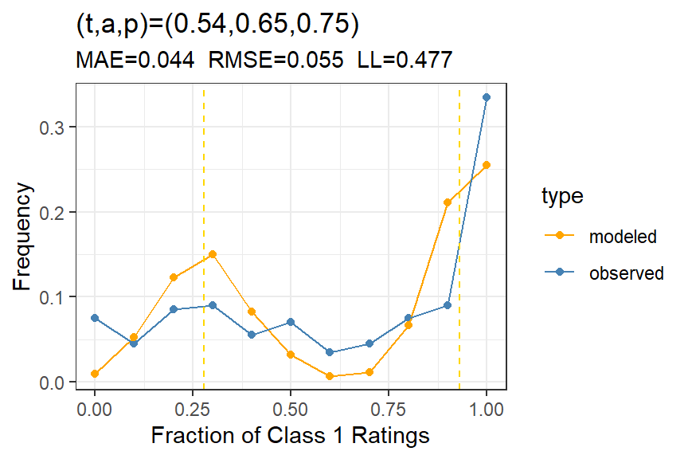
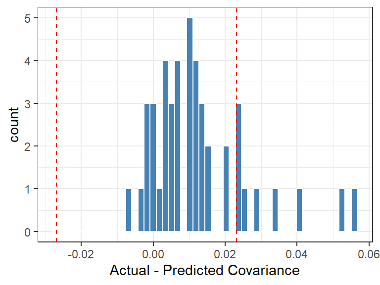

library(tidyverse)library(tapModel)library(LaplacesDemon) # for mode and rbernlibrary(knitr)library(kableExtra)data(ptsd)# convert Q2 to long formratings <- ptsd |>filter(Question =="Q2") |>select(-Question) |>gather(RaterID, Rating, -SubjectID) |>mutate(rater_id =as.integer(str_extract(RaterID,"\\d+")),rating = Rating -1) |>select(subject_id = SubjectID, rating, rater_id)
1 Example: PTSD Data
A PTSD data set is used to illustrate methods to assess model fit and error estimation, with data from Hinde (2023). The abstract reads
The aim of this study is to examine the inter-rater reliability between 10 independent psychologists when assessing the fit of both DSM-5-TR and ICD-11 PTSD and CPTSD (ICD-11 only) Criterion A for self-reported parenting-related trauma descriptions. A sample of 200 parents of autistic children rated their most stressful parenting related event/s using the Life Events Checklist for DSM-5 (LEC-5).
In the ratings data, there are 2000 binary ratings over 200 subjects, with 10 unique raters. Each rater has rated each subject on three questions, so there are three of these binary data sets. I’ve picked question 2 for this illustration. The intent of each assessment is to determine if the subject has PTSD, a binary outcome.
2 Estimate t-a-p parameters
The first step is to estimate the average t-a-p parameters and compare to the DK-threshold.
Show the code
counts <-as_counts(ratings)params <- tapModel::fit_counts(counts)params |>select(t, a, p) |>kable(digits =2) |>kable_styling(full_width =FALSE, # <- stops spanning the full pageposition ="center",bootstrap_options =c("striped","hover","condensed") )
Table 2: Estimated percentiles for accuracy, given 600 subjects with ten raters each, when accuracy is actually zero.
Threshold
Accuracy
50%
0.00
75%
0.07
90%
0.11
95%
0.13
98%
0.14
The accuracy estimate of \(a=.65\) is significantly higher than the 98% DK-threshold that we see in Table 2.
The subject calibration in Figure 1 isn’t great, but it does tend to capture the major peak in Class 1 ratings on the high side. Can this be improved with a hierarchical model?
Figure 1: Subject calibration for PTSD data Question 2, showing the model fit for the average t-a-p model.
3 Hierarchical model
If we include parameters for subjects and raters, does model fit improve?
Show the code
# generate individual parameters for subjects, raters, ratingsrating_params <- tapModel::fit_ratings(ratings)subject_calibration(rating_params)

Figure 2: Subject calibration for PTSD data Question 2, showing the model fit for the hierarchical t-a-p model.
We can see from the average error rates, comparing Figure 1 to @ fig-subject-calibration2, that the hierarchical model doesn’t match the subject rates of Class 1 ratings, even though the likelihood improved considerably. Of course, the rater calibration will be much better for the more complex model. In fact, both the rater calibration and the rating calibration are nearly perfect.
4 Independence
Is there an issue with rater independence? To assess that, we can use a simulated data set to set expectations.
Show the code
# simulated to get the rangeset.seed(123)range <-rater_cov_quantile(rating_params)# empirical vs expected correlationscov_results <-rater_cov(rating_params)plot_rater_cov(cov_results, range)

Figure 3: Independence plot, showing 2% to 98% range from simulation.
Ideally we’d use more simulations to get a more certain range, but this result is suggestive that there might be some information leak from one case to another or from one rater to another, given a couple of high correlations. This could also just be an effect of model fit not being perfect.
5 Rater Parameters
Show the code
# extract the rater parametersrating_params |>group_by(rater_id) |>summarize(c_j =mean(rating),a_j =first(a),p_j =first(p),bias =mean(p - t)) |>arrange(a_j) |>kable(digits =2) |>kable_styling(full_width =FALSE, # <- stops spanning the full pageposition ="center",bootstrap_options =c("striped","hover","condensed") )
Table 3: Rater parameters, showing the ID of the rater from the original PTSD data with individual rater statistics: c_j is the rate of class 1 assignments; a_j and p_j are the t-a-p model parameters for this rater; and bias is mean(p_j - t_i).
rater_id
c_j
a_j
p_j
bias
1
0.84
0.36
1.00
0.45
5
0.80
0.39
0.96
0.41
4
0.80
0.43
0.98
0.44
2
0.52
0.64
0.48
-0.07
9
0.66
0.65
0.86
0.32
7
0.54
0.75
0.53
-0.02
6
0.46
0.75
0.18
-0.36
3
0.56
0.78
0.61
0.07
8
0.59
0.86
0.88
0.33
10
0.60
0.89
1.00
0.45
The table of estimated rater parameters in Table 3 shows a range of accuracies for the raters. The highest correlations among raters was 1, 4, and 5, who also have the smallest accuracy coefficients. Generally, low accuracy would mean more randomness and less correlation, so this seems odd until we realize that these raters have \(p \approx 1\), with a high rate of Class 1 ratings (\(c_j\)). The formula for predicted correlation takes all this into account, but it may be that the imperfect model fit contributes to underestimating these correlations.
To test the robustness of the individual model fit, we can simulate new data sets from the hierarchical parameters and then see how well we can recover the parameters. This is computationally expensive for large data sets, so I’ll only run 50 of these.
The results in Figure 4 show that the individual rater parameters are well recovered from the simulated data sets. The red markers show the proposed accuracy estimates for each rater, and the boxplots show the distribution of recovered values after simulating new ratings and recovering the parameters. We could do the same for the \(p_j\) parameters.
6 Other Questions
The PTSD data set is interesting because the same raters used three different methods to assess the PTSD condition for the same subjects. This gives us an opportunity to see how the rater accuracy estimates generalize. We might guess that an inaccurate rater would be inaccurate regardless of the particular measure being used.
Figure 5: Comparison of rater accuracy over three methods of assessing PTSD, where a_j is the estimated rater accuracy for each method, and c_j is the rater’s average Class 1 rate.
The pattern of \(a_j\) estimates over the three evaluation types in Figure 5 show that rater accuracy is consistent, for example with rater 1 consistently among the least accurate, and rater 8 among the best. We can also see that method 2 tends to generate the most accurate results over all the raters. Finally, we can attribute part of the inaccuracy for the low-accuracy raters to over-assigning Class 1. Note that method 2 has more discrimination generally, with smaller raters of Class 1 (the green dots in the right panel are closer to .5).
7 Summary
The above analysis shows what the PTSD ratings have impressive accuracy if the model assumptions are met (primarily independence of raters). A hierarchical model is called for, and it shows that the raters have a range of characteristics that might be useful in improving classifications in real-world settings. In particular, some raters are notably more accurate than others. The third method of scoring seems to inflate Class 1 ratings, reducing accuracy generally. The PTSD data analysis shows that we can extract much more meaningful information from the ratings than is possible with the traditional kappa statistics. Note, however, that we only get the full benefit of these new methods if we have rater identification for each rating.
References
Hinde, K. (2023). Inter-rater reliability in determining criterion a for PTSD and complex PTSD in parents of autistic children using the life events checklist for DSM-5.